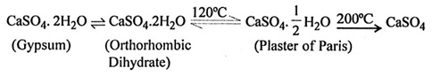
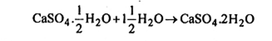

Q 8. Write short note on Plaster of Paris.
Ans. Plaster of paris (CaSO4 1/2 H2O] is formed by heating pure gypsum to a temperature of about 120-160°C. When the gypsum is heated above 200°C, the anhydrous sulphate is formed, which loses the power of readily combining with water. Various changes can be revealed as follows –

The manufacturing of plaster of paris from gypsum consists in first crushing and grinding of gypsum, and then calcining the ground product in kilns (heated to about 150°C) and lastly, pulverizing the calcined product.
Properties or Setting and Hardening - When plaster of paris is mixed with water, the powder makes a plastic mass, which rapidly hardens or sets, expanding slightly in the process and regains the closely-packed crystalline structure of gypsum (CaSO4. 2H2O). Setting of plaster of paris can be accelerated by admixing it with alkali sulphates such as K2SO4, Na24 (or alums), that initiate as well as hasten the crystallization process.
The reaction is given below –

Uses of concrete are as under —
(i) It is used in making roads, buildings, floors, tanks etc.
(ii) In making water proof structures and other purposes, where great strength is required.
The common proportion for cement send and gravel in concrete are —
(a) 1 : 1(1/2) : 3 (b) 1: 2 : 4 (c) 1 : 3 : 6
Applications - (i) Its main uses are as plaster for walls and in plasterboard, which is made up of alternate layers of a fibrous material such as felt or paper and gypsum plaster.
(ii) Its slight expansion on setting, renders plaster of paris appropriate for making moulds, because details are thereby accurately reproduced.
(iii) It is used in making castings structural tiles and in surgical bandages